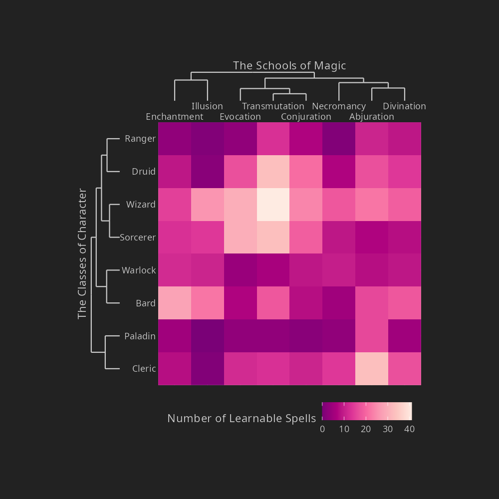

![]()
library(targets)
library(ggplot2)
library(legendry)
library(tidyselect)
library(dplyr)
library(fs)About 18 months ago I wrote a post about balrogs and makefiles. The post was long, strange, but also cathartic. It had bothered me for years that I didn’t really understand make as well as I wanted to, and it was really helpful to write up some notes about it as a way of teaching myself how to use it more effectively than I had done in the past.1 Buried at the very end of the post is an almost-apologetic reference to the targets R package by Will Landau, which provides a similar toolkit designed to work cleanly for R users.
Even then I knew that I was going to need to learn how to use targets, but somehow I never quite got around to it… life gets in the way, I suppose. I have been preoccupied by other tasks, sadly, and it has taken me until now to (a) sit down and read through the targets user manual, and (b) come up with some fun side projects that would give me the opportunity to try it out.
Thankfully, I recently managed to set some time aside to teach myself how to use the package, using three toy projects that I bundled together into a small github repository. Realising that I would inevitably forget what I’ve learned if I didn’t write up some notes on the projects, I decided to write them up as a blog post.
So, here goes. This is a tale of three targets…
Story 1: An analysis pipeline
The first pipeline I built using targets was based the fun Tidy Tuesday visualisations that I described in my last post. In that post, I talked about two images I made using a data set about Dungeons & Dragons spells. When I wrote that post, I didn’t talk about targets at all, and none of the code presented in that blog post is written in a “targets-friendly” way. However, although that form of the code was the simplest way to write it up, it’s not how I originally wrote it. It was originally written as a targets pipeline.
As it happens, I have a slightly-modified copy of the project in the spells directory within this blog post, so that I can play with the project within this post. Yay! But this in turn brings us to the first point to make about targets: it’s a project-oriented tool, in the sense that each project corresponds to a single folder (and its sub-folders), and not surprisingly it’s easiest to use from within the project. To make my life easier I’ll sometimes change that directory so that when I’m discussing a specific targets project, the code will execute from the root directory of that project. At the R console we would use setwd() to do so, but that’s not the best approach within a knitr-based tool (quarto, rmarkdown, etc), and you will get warning messages if you try to do it that way. The preferred method for changing directories with an R markdown or quarto document is to set the root.dir knitr option. Because I’ll be doing that several times in this post, I’ll write a little convenience function to take care of this whenever I need to switch to a new project:
set_knitr_dir <- function(dir, post = "2025-01-08_using-targets") {
knitr::opts_knit$set(root.dir = here::here("posts", post, dir))
}
set_knitr_dir("spells")Next, let’s take a look at the structure of this project. At the moment this is a clean project (i.e., no code has been run yet), so it contains only the source files. There are only three:
dir_tree().
├── _targets.R
├── analysis.R
└── spells.csvHere’s what each file does:
- The
spells.csvfile is the data set I wish to analyse - The
analysis.Rscript defines a collection of functions which, when called, will perform the required analyses and generate the outputs - The
_targets.Rscript is (unsurprisingly) the build script
In a moment I’ll talk about the _targets.R script, but first I’ll quickly describe what the analysis itself does.
What does the analysis do?
If you read the schools of magic post that I wrote earlier this year, you’ve already seen the code underpinning the analysis. The only difference between the version in the previous post and the version I’ve used here is that the analysis.R script wraps each step of the analysis into a function. This is pretty crucial to constructing a targets pipeline, actually, and the targets user manual has a whole section discussing function-oriented workflow.
Functions are the building blocks of most computer code. They make code easier to think about, and they break down complicated ideas into small manageable pieces. Out of context, you can develop and test a function in isolation without mentally juggling the rest of the project. In the context of the whole workflow, functions are convenient shorthand to make your work easier to read.
One thing that continually surprises me about analysis scripts that I encounter in the wild is that analysts don’t write functions enough. It’s easily the most common trap I see people falling into, to be honest, and it leads to some very dangerous and hard-to-isolate bugs because the dependencies between different parts of the code become hard to see as the script gets longer. So I am a big fan of the design feature in targets that pushes the user to break a big analysis into a smaller number of functions that perform specific tasks. For example, once the spells data set has been loaded, the pipeline that constructs the “spell dice” plot is encapsulated by two key functions:
dice_data()takes the spells data as input, and performs all the data wrangling steps required to construct a tidied version of the data that is suitable for visualisationdice_plot()takes the tidied dice data as input, specifies the “spell dice” plot, and writes it to an output file
The “schools of magic” plot is slightly more elaborate, and uses three functions:
scholastic_data()takes the spells data as input, and performs the data wrangling steps required to create tidy data suitable for constructing the heatmapscholastic_clusters()takes this tidy data as input, and the performs additional steps required to construct the hierarchical clustering used to draw dendrograms alongside the heatmapscholastic_plot()takes the data set and the clustering as input, and uses them to build the “schools of magic” plot that is written to an output file

The actual code for these functions isn’t very important for the purposes of understanding the targets pipelinem, and in any case I’ve described the plots in detail before. But for what it’s worth, the exact code is included below the fold here:
Click to show/hide the analysis.R code
analysis.R
# spell dice plot ---------------------------------------------------------
dice_data <- function(spells) {
dice_dat <- spells |>
select(name, level, description) |>
mutate(
dice_txt = str_extract_all(description, "\\b\\d+d\\d+\\b"),
dice_txt = purrr::map(dice_txt, unique)
) |>
unnest_longer(
col = "dice_txt",
values_to = "dice_txt",
indices_to = "position"
) |>
mutate(
dice_num = dice_txt |> str_extract("\\d+(?=d)") |> as.numeric(),
dice_die = dice_txt |> str_extract("(?<=d)\\d+") |> as.numeric(),
dice_val = dice_num * (dice_die + 1)/2,
dice_txt = factor(dice_txt) |> fct_reorder(dice_val)
)
return(dice_dat)
}
dice_plot <- function(dice_dat) {
palette <- hcl.colors(n = 10, palette = "PuOr")
labs <- dice_dat |>
summarise(
dice_txt = first(dice_txt),
count = n(),
.by = dice_txt
)
pic <- ggplot(
data = dice_dat,
mapping = aes(
x = dice_txt,
fill = factor(level)
)
) +
geom_bar(color = "#222") +
geom_label_repel(
data = labs,
mapping = aes(
x = dice_txt,
y = count,
label = dice_txt
),
size = 3,
direction = "y",
seed = 1,
nudge_y = 4,
color = "#ccc",
fill = "#222",
arrow = NULL,
inherit.aes = FALSE
) +
scale_fill_manual(
name = "Spell level",
values = palette
) +
scale_x_discrete(
name = "Increasing average outcome \u27a1",
breaks = NULL,
expand = expansion(.05)
) +
scale_y_continuous(name = NULL) +
labs(title = "Dice rolls described in D&D spell descriptions") +
theme_void() +
theme(
plot.background = element_rect(fill = "#222"),
text = element_text(color = "#ccc"),
axis.text = element_text(color = "#ccc"),
axis.title = element_text(color = "#ccc"),
plot.margin = unit(c(1, 1, 1, 1), units = "cm"),
legend.position = "inside",
legend.position.inside = c(.3, .825),
legend.direction = "horizontal",
legend.title.position = "top",
legend.byrow = TRUE
)
ggsave(
filename = "dice_pic.png",
plot = pic,
width = 2000,
height = 1000,
units = "px",
dpi = 150
)
return("dice_pic.png")
}
# schools of magic plot ---------------------------------------------------
# constructs the data frame used by geom_tile() later
scholastic_data <- function(spells) {
spells |>
select(name, school, bard:wizard) |>
pivot_longer(
cols = bard:wizard,
names_to = "class",
values_to = "castable"
) |>
summarise(
count = sum(castable),
.by = c("school", "class")
) |>
mutate(
school = str_to_title(school),
class = str_to_title(class)
)
}
# hierarchical clustering for the schools and classes
scholastic_clusters <- function(dat) {
# matrix of counts for each school/class combination
mat <- dat |>
pivot_wider(
names_from = "school",
values_from = "count"
) |>
as.data.frame()
rownames(mat) <- mat$class
mat$class <- NULL
as.matrix(mat)
# each school is a distribution over classes,
# each class is a distribution over schools
class_distribution <- mat / replicate(ncol(mat), rowSums(mat))
school_distribution <- t(mat) / (replicate(nrow(mat), colSums(mat)))
# pairwise distances
class_dissimilarity <- dist(class_distribution)
school_dissimilarity <- dist(school_distribution)
# hierarchical clustering
clusters <- list(
class = hclust(class_dissimilarity, method = "average"),
school = hclust(school_dissimilarity, method = "average")
)
return(clusters)
}
scholastic_plot <- function(dat, clusters) {
pic <- ggplot(dat, aes(school, class, fill = count)) +
geom_tile() +
scale_x_dendro(
clust = clusters$school,
guide = guide_axis_dendro(n.dodge = 2),
expand = expansion(0, 0),
position = "top"
) +
scale_y_dendro(
clust = clusters$class,
expand = expansion(0, 0)
) +
scale_fill_distiller(palette = "RdPu") +
labs(
x = "The Schools of Magic",
y = "The Classes of Character",
fill = "Number of Learnable Spells"
) +
coord_equal() +
theme(
plot.background = element_rect(fill = "#222", color = "#222"),
plot.margin = unit(c(2, 2, 2, 2), units = "cm"),
text = element_text(color = "#ccc"),
axis.text = element_text(color = "#ccc"),
axis.title = element_text(color = "#ccc"),
axis.ticks = element_line(color = "#ccc"),
legend.position = "bottom",
legend.background = element_rect(fill = "#222", color = "#222")
)
ggsave(
filename = "scholastic_pic.png",
plot = pic,
width = 1000,
height = 1000,
units = "px",
dpi = 150
)
return("scholastic_pic.png")
}Defining the pipeline
Now that you’ve read the verbal description of what each function does, it’s intuitively pretty clear how the analysis pipeline is supposed to work. Roughly speaking, you’d expect the analysis to be executed using a script like this:
run_analysis.R
# load packages
library(tibble)
library(readr)
library(ggplot2)
library(dplyr)
library(stringr)
library(tidyr)
library(forcats)
library(ggrepel)
library(legendry)
# read analysis script
source("analysis.R")
# setup
input <- "spells.csv"
spells <- read_csv(input, show_col_types = FALSE)
# make the spell dice plot & write to output
dice_dat <- dice_data(spells)
dice_pic <- dice_plot(dice_dat)
# make the schools of magic plot & write to output
scholastic_dat <- scholastic_data(spells)
scholastic_clus <- scholastic_clusters(scholastic_dat)
scholastic_pic <- scholastic_plot(scholastic_dat, scholastic_clus)So, how does it work with targets? Well, if we take a look at the _targets.R script, we can see it looks suspiciously similar to the code above:
_targets.R
library(targets)
# specify required packages
tar_option_set(packages = c(
"tibble", "readr", "ggplot2", "dplyr", "stringr",
"tidyr", "forcats", "ggrepel", "legendry"
))
# read analysis script
tar_source("analysis.R")
list(
# setup
tar_target(input, "spells.csv", format = "file"),
tar_target(spells, read_csv(input, show_col_types = FALSE)),
# dice plot
tar_target(dice_dat, dice_data(spells)),
tar_target(dice_pic, dice_plot(dice_dat)),
# scholastic plot
tar_target(scholastic_dat, scholastic_data(spells)),
tar_target(scholastic_clus, scholastic_clusters(scholastic_dat)),
tar_target(
scholastic_pic,
scholastic_plot(scholastic_dat, scholastic_clus)
)
)In this pipeline, the set up involves two steps:
- I’ve used
tar_option_set()to declare the required R packages, thereby making those packages available to the pipeline - I’ve used
tar_source()to read the analysis script, thereby making the functions in that file accessible to the pipeline
Having taken care of the preliminaries, the pipeline is specified via a list of targets, each of which is defined by a call to tar_target(). Each target has a name, and is associated with a command that is to be executed. If I’d named the arguments on line 18 in my _targets.R script, the code would look like this:
tar_target(
name = dice_dat,
command = dice_data(spells)
)Notice the similarity to line 20 of the run_analysis.R script:
dice_dat <- dice_data(spells)In essence, that’s what I’m doing with the call to tar_target(). I’m specifying that the command dice_data(spells) is to be executed, and the results should be stored as the variable dice_dat. However, instead of immediately executing this code in the current R environment, what tar_target() does is create the infrastructure so that this command can be incorporated into the pipeline when it actually gets built. With one exception, this is the recipe I followed for constructing all the targets in my _targets.R script.
The one exception to this pattern occurs on line 14 of _targets.R, where my target is defined by this call to tar_target():
tar_target(
name = input,
command = "spells.csv",
format = "file"
)In one sense, this target is pretty much the same as the others: it defines a variable called input using the “command” "spells.csv", and so in that respect it’s much the same as line 16 of the run_analysis.R script. However, notice that I’ve also specified that format = "file". This tells targets that "spells.csv" isn’t just a string, it’s also the name of a file that needs to be tracked. By declaring it as a file target, I’m ensuring that if the spells.csv file gets altered in some way, this target and any target that depends on it will need to be rebuilt.
The tar_visnetwork() function provides a handy way of visualising the structure of a pipeline as a little HTML widget. To keep things as simple as possible, at least for the moment, I’ll set targets_only = TRUE so that the graph ignores the functions defined in analysis.R, and only focuses on the targets themselves:2
tar_visnetwork(targets_only = TRUE)All these targets are shown in blue, indicating that they are “outdated”. That’s to be expected at this point, of course: I haven’t actually run anything yet! I’ll get to that momentarily, but before I do I’ll call tar_outdated() to confirm the obvious:
tar_outdated()[1] "scholastic_clus" "scholastic_dat" "spells" "scholastic_pic"
[5] "dice_pic" "input" "dice_dat" These are the targets that need to be (re)run.
Running the pipeline
Okay, it is now time to run the pipeline. We can do this by calling tar_make(). Here’s what happens when we do that:
tar_make()▶ dispatched target input
● completed target input [0.314 seconds, 302.514 kilobytes]
▶ dispatched target spells
● completed target spells [0.111 seconds, 73.966 kilobytes]
▶ dispatched target scholastic_dat
● completed target scholastic_dat [0.016 seconds, 401 bytes]
▶ dispatched target dice_dat
● completed target dice_dat [0.024 seconds, 33.486 kilobytes]
▶ dispatched target scholastic_clus
● completed target scholastic_clus [0.014 seconds, 634 bytes]
▶ dispatched target dice_pic
● completed target dice_pic [0.908 seconds, 65 bytes]
▶ dispatched target scholastic_pic
● completed target scholastic_pic [0.229 seconds, 71 bytes]
▶ ended pipeline [1.708 seconds]The output here is pretty descriptive, but it’s still worth expanding on it a little. For each target, there are two lines of output that look like this:
▶ dispatched target TARGETNAME
● completed target TARGETNAME [blah seconds, blah kilobytes]What these two lines mean is that, under the hood, targets “dispatches” the task to a separate R session using the callr package, and the code is executed there. The target is deemed “completed” once that R session finishes running the code and returns the output. This approach has two advantages over simply running the code at the console. First, it is more reproducible, because each target is run in a clean R session. Second, this design makes it waaaaaaaay easier to parallelise the execution. More on that later.
In any case, now that we’ve finished running the pipeline, let’s take a look at the state of our “spells” project folder:
dir_tree(recurse = FALSE).
├── _targets
├── _targets.R
├── analysis.R
├── dice_pic.png
├── scholastic_pic.png
└── spells.csvThere are three new things here. First, as expected, we have two image files dice_pic.png and scholastic_pic.png. These are the outputs produced by our analysis script. Yay, it worked! There’s also a _targets folder: this is the place where the targets package stashes all its metadata and stores copies of the built targets. I’ll talk more about the contents of this folder later, but just to give a sense of it now, here’s a sneak peek at what is stored in that folder:
dir_tree("_targets")_targets
├── meta
│ ├── meta
│ ├── process
│ └── progress
├── objects
│ ├── dice_dat
│ ├── dice_pic
│ ├── scholastic_clus
│ ├── scholastic_dat
│ ├── scholastic_pic
│ └── spells
└── userWhen the project changes
Now that we’ve run the pipeline, let’s take another look at the network. The structure of it hasn’t changed, but all the targets are showing as “up to date”:
tar_visnetwork(targets_only = TRUE)If I call tar_make() again, essentially nothing happens. All the targets are up to date, so everything is skipped:
tar_make()✔ skipped target input
✔ skipped target spells
✔ skipped target scholastic_dat
✔ skipped target dice_dat
✔ skipped target scholastic_clus
✔ skipped target dice_pic
✔ skipped target scholastic_pic
✔ skipped pipeline [0.069 seconds]Nice!
Actually, you know what? Now feels like a good time to show the full network, including all the functions that contribute to the pipeline…
tar_visnetwork()Now let’s suppose that, for whatever reason, I tinker with the plotting code for the “schools of magic” image. Perhaps I want to use a different colour scheme or something. So I go back into my code and change the code for the scholastic_plot() function, but only that function <edits the file behind the scenes…>. Let’s see what this does to the pipeline visualisation:
tar_visnetwork()Not only does targets detect that the function has been altered, it also recognises that the scholastic_pic target (and only that target) is now outdated:
tar_outdated()[1] "scholastic_pic"Taking this a little further, suppose I also decide to tinker with the dice_data() function <edits the file again…>. Perhaps I’ve decided that actually I would like the plot to count every instance of a dice roll description in each spell, not merely the unique instances as the previous version did. Let’s see what our network visualisation looks like now:
tar_visnetwork()That makes sense too: the dice_data() function affects the dice_dat target, but that also has implications for the dice_pic target because it depends on dice_dat. So now our list of outdated targets looks like this:
tar_outdated()[1] "scholastic_pic" "dice_pic" "dice_dat" When we re-run the pipeline this time, those three targets (and only those three targets) are rebuilt. The others are skipped:
tar_make()✔ skipped target input
✔ skipped target spells
✔ skipped target scholastic_dat
▶ dispatched target dice_dat
● completed target dice_dat [0.03 seconds, 35.004 kilobytes]
✔ skipped target scholastic_clus
▶ dispatched target dice_pic
● completed target dice_pic [0.989 seconds, 65 bytes]
▶ dispatched target scholastic_pic
● completed target scholastic_pic [0.219 seconds, 71 bytes]
▶ ended pipeline [1.584 seconds]This, as you might imagine, is extremely useful in situations where you have a project that involves hundreds of analyses and figures that take a really long time to execute if you re-run everything from the beginning… but all you actually want to do is change the fontsize on figure 312.
Epilogue
For a first attempt at using targets, I’m not unhappy with this. It did what I needed it to do, and I was able to understand the basic structure of the package.
But there are some limitations. One thing that really bothers me is the way I handled the ggplot code. My thinking at the time was based on the thinking that real life analysis pipelines often have some very slow ggplot2 code, but the slow part is not the construction of the object itself, but rather the build, render, and draw stages. It’s not much of an issue in this specific example because everything is runs fast, but you can see why I had this worry by looking at what benchplot() has to say about the plots I created here:
tar_load(c(scholastic_dat, scholastic_clus))
benchplot(
ggplot(scholastic_dat, aes(school, class, fill = count)) +
geom_tile() +
scale_x_dendro(
clust = scholastic_clus$school,
guide = guide_axis_dendro(n.dodge = 2),
expand = expansion(0, 0),
position = "top"
) +
scale_y_dendro(
clust = scholastic_clus$class,
expand = expansion(0, 0)
) +
coord_equal()
) step user.self sys.self elapsed
1 construct 0.018 0.001 0.018
2 build 0.037 0.000 0.038
3 render 0.047 0.002 0.046
4 draw 0.028 0.000 0.028
5 TOTAL 0.130 0.003 0.130Even in this example, where there isn’t very much that needs to be drawn to the graphics device, constructing the plot isn’t the step that takes the most time. So it makes very little sense to treat the plot specification (i.e., the gg plot object) as the terminal target of a plotting pipeline, because 90% of the compute time takes place after the gg object is specified (this is even more obvious when you have a scatterplot that needs to draw millions of dots to the canvas).
Having been burned by this in the past, I made the decision that my plotting target would encapsulate all stages in the plot rendering process. Only once the image has been written to a file would my plot target be deemed complete. As far as it goes, this is very sensible reasoning, but in retrospect I think it might have made a lot more sense to split the plotting target into stages. Saving the gg object as an intermediate target (and possibly other stages of the plot construction too) might have been sensible. It might seem like I’m being weirdly nitpicky, but my motivation here is very practical: I have a couple of projects where rerunning the analysis very time-consuming, and the biggest bottleneck (by far) is rendering and drawing some very unpleasant gg objects. I’ve been using a variety of tricks to work around this issue, none of which have been satisfying.3 Targets offers a much cleaner solution to my problem, but it’s clear to me just from this toy exercise that I will need to be careful about how I set up targets for these analysis pipelines.
Still, it seems very clear to me that the problem can be solved with targets. My toy example is a kind of worst case solution… if all else fails, I can define the output image itself as the the target to be built. From that perspective, mission accomplished babes.
Story 2: Building a blog
set_knitr_dir("liteblog")Okay, so the first project went better than I’d hoped. Shall we try something different then? This time around I decided I’d be a little more ambitious, and attempted to write a lightweight blogging tool using litedown as a drop-in replacement for R markdown or quarto, and using targets to manage the build process for the site as a whole. I had two reasons for picking this as my second attempt. First, personal preference: I seem to have developed a habit for rolling my own half-arsed blogging tools. A very long time ago I wrote a bad blogging package called caladown that I would not recommend anyone use ever, and about a about a year ago I repeated the foolishness over my summer break when I got bored and built a very silly blog based on knitr and eleventy, for literally no reason. Neither exercise was particularly useful, but both were fun.
The second reason for choosing this project is a little more serious. Unlike a simple analysis pipeline, there are a lot of details about the blog you don’t know in advance. You don’t know what the files will be called, you don’t know how many of them there will be, and so on. On top of that, even if you are able to write a target for “build a blog post”, you will need to build dozens or hundreds of tiny variations of the same target. There is no way in hell anyone wants to hand-code a targets pipeline for this situation: instead, we’ll need a mechanism for defining and building targets on the fly, rather than trying to specify all the targets in advance.
In other words, we’ll need to think about dynamic branching.4
Designing the blog
Just like last time, before we talk about the targets pipeline, it’s helpful to understand the rest of the project. After a bit of thought, I decided that a “liteblog” project would have a structure that looks something like this:
dir_tree().
├── _liteblog-footer.html
├── _liteblog-header.html
├── _liteblog.R
├── _liteblog.css
├── _targets.R
└── source
├── 404.rmd
├── _001_hello-cruel-world.rmd
├── _002_blog-object.rmd
└── index.rmdThis is what a clean project looks like before the blog has been built. Inside the source folder there are four R markdown documents, corresponding to the four HTML documents that will be created when the site is built. Specifically:5
index.rmdbecomes the blog homepageindex.html404.rmdbecomes the 404 page404.html_001_hello-cruel-world.rmdbecomes/001/hello-cruel-world/index.html_002_blog-object.rmdbecomes/002/blog-object/index.html
The other files are used to define blog structure, style, and build process:
_liteblog-header.htmlprovides HTML for the blog navbar_liteblog-footer.htmlprovides HTML for the blog footer_liteblog.cssprovides the visual styling_liteblog.Rsupplies an R6 class calledLiteblogused to configure the blog_targets.Rdefines the build process
The header, footer, and css files aren’t very important for our purposes, and neither is the content of the R markdown files. All the heavy lifting is done by _liteblog.R and _targets.R. I’ll talk about each of these in turn.
The Liteblog class
For reasons that I have already forgotten, I made a decision to implement the blogging tool as an R6 class. This blog post isn’t the place to talk about how R6 works, but conveniently Hadley already did this better than I could so now I don’t have to. Even more conveniently, it doesn’t matter too much for this post if you don’t already know R6. But for those who do, here’s the code:
_liteblog.R
Liteblog <- R6::R6Class(
classname = "Liteblog",
public = list(
initialize = function(root = ".",
source = "source",
output = "site",
url = NULL) {
self$root <- root
self$source <- source
self$output <- output
self$url <- url
},
root = NULL,
source = NULL,
output = NULL,
url = NULL,
pattern = "[.][rR]?md$",
find_posts = function() {
files <- fs::dir_ls(
path = fs::path(self$root, self$source),
recurse = TRUE,
regexp = self$pattern,
type = "file"
)
unname(unclass(files))
},
find_static = function() {
files <- fs::dir_ls(
path = fs::path(self$root, self$source),
recurse = TRUE,
regexp = self$pattern,
invert = TRUE,
all = TRUE,
type = "file"
)
unname(unclass(files))
},
fuse_post = function(file, ...) {
output_path <- litedown::fuse(file)
output_file <- fs::path_file(output_path)
if (stringr::str_detect(output_file, "^_")) {
destination <- output_file |>
stringr::str_replace_all("_", "/") |>
stringr::str_replace("\\.html$", "/index.html") |>
stringr::str_replace("^", paste0(self$output, "/"))
} else {
destination <- paste0(self$output, "/", output_file)
}
destination <- fs::path(self$root, destination)
fs::dir_create(fs::path_dir(destination))
fs::file_move(output_path, destination)
},
copy_static = function(file) {
destination <- file |>
stringr::str_replace(
pattern = paste0("/", self$source, "/"),
replacement = paste0("/", self$output, "/")
)
fs::dir_create(fs::path_dir(destination))
fs::file_copy(
path = file,
new_path = destination,
overwrite = TRUE
)
}
)
)It’s… honestly not that great.6 It is fit for purpose, so to speak, but if I were ever intending to use this in real life I’d want to give it a lot more love than I have to date. Nevertheless, just to give you a sense of how it works, I’ll create a new blog object by calling Liteblog$new():
blog <- Liteblog$new()
blog<Liteblog>
Public:
clone: function (deep = FALSE)
copy_static: function (file)
find_posts: function ()
find_static: function ()
fuse_post: function (file, ...)
initialize: function (root = ".", source = "source", output = "site", url = NULL)
output: site
pattern: [.][rR]?md$
root: .
source: source
url: NULLIgnoring the boring parts of this output, you can see that this blog object has four methods that will get used when the site gets built by our targets pipeline:
$find_posts()detects R markdown documents in the source folder$find_static()detects other files in the source folder$fuse_post()converts an R markdown file to HTML in the output folder$copy_static()copies a file to the output folder
There’s not much to be gained by diving very deep into these functions, but as an example, here’s what you would do to discover all the R markdown posts in this project:
blog$find_posts()[1] "./source/404.rmd"
[2] "./source/_001_hello-cruel-world.rmd"
[3] "./source/_002_blog-object.rmd"
[4] "./source/index.rmd" This provides the core blogging toolkit that I’ll now use when writing my target pipeline. It’s extremely bare bones, and not very customisable, but of course my intention here isn’t to build a proper blogging platform. It’s just a toy that I can play with when building a more complex build pipeline. Speaking of which…
The build pipeline
The _targets.R file for this project is a little more complicated than the one I used for the D&D spells plots, and will take a bit of effort to unpack all of it. Let’s start by looking at the file as a whole:
_targets.R
library(targets)
tar_source("_liteblog.R")
list(
# define blog configuration
tar_target(
name = blog,
command = Liteblog$new(
root = rprojroot::find_root(
rprojroot::has_file("_liteblog.R")
),
source = "source",
output = "site",
url = "liteblog.djnavarro.net"
)
),
# track configuration files
tar_target(
name = blog_rds,
command = saveRDS(blog, file = "_liteblog.rds"),
format = "file"
),
tar_target(blog_css, "_liteblog.css", format = "file"),
tar_target(blog_hdr, "_liteblog-header.html", format = "file"),
tar_target(blog_ftr, "_liteblog-footer.html", format = "file"),
# detect file paths (always run)
tar_target(
name = post_paths,
command = blog$find_posts(),
cue = tar_cue("always")
),
tar_target(
name = static_paths,
command = blog$find_static(),
cue = tar_cue("always")
),
# specify file targets
tar_target(
name = post_files,
command = post_paths,
pattern = map(post_paths),
format = "file"
),
tar_target(
name = static_files,
command = static_paths,
pattern = map(static_paths),
format = "file"
),
# fuse targets depend on blog configuration files
# copy targets don't need dependencies
tar_target(
name = post_fuse,
command = blog$fuse_post(
post_files,
blog_css,
blog_hdr,
blog_ftr
),
pattern = map(post_files)
),
tar_target(
name = static_copy,
command = blog$copy_static(static_files),
pattern = map(static_files)
)
)Okay, yes, there’s a lot to unpack here as the young people7 say. Not only is the code considerably longer than it was last time, I’m also making use of several targets features that weren’t present last time. Rather than try to explain it all at once, I’ll start by calling tar_visnetwork() again, focusing only on the targets that form the core of my build pipeline:
tar_visnetwork(
allow = any_of(c(
"static_paths", "post_paths", "post_files",
"static_files", "post_fuse", "static_copy"
))
)Let’s look at the top path first. It comprises the following steps:
- Find the R markdown documents using
blog$find_posts(). This creates a single build target, a character vectorpost_paths. - Declare that every R markdown document should be a tracked file. This is the role of the
post_filestarget, but it’s a target comprised of several branches, and those branches are defined using a pattern. More on this later. - For each tracked R markdown document, use
blog$post_fuse()to build the post and move the resulting HTML file to the correct location. This is the role ofpost_fuse, and again this is a pattern target comprised of many branches.
The second path in the pipeline is analogous, but simpler:
- The
static_pathstarget tracks the paths to static files - The
static_filestarget tracks the content of the static files - The
static_copytarget copies the static files to the output folder
These two paths form the core of the build process, but it’s not the whole story. So let’s zoom out now and take a look at the complete network:
tar_visnetwork()In this version, you can see that most of the build pipeline depends on the blog object: that makes sense because this is the R6 object that defines methods like $find_posts() and $fuse_post(), and it’s these functions that are called when the blog is built. Similarly, since blog is itself an instance of the Liteblog class, the class itself is an upstream dependency of blog.
The other four targets are less interesting. Three of them (blog_css, blog_hdr, and blog_ftr) are used to keep track of the style files (i.e. _liteblog.css, _liteblog-header.html, and _liteblog-footer.html), so that if any of those files are modified the it will trigger a rebuild of any target that uses those files. The fourth one, blog_rds, is a bit of an odd one and I’m not sure I like it: this target saves the blog object to an rds file. The reason for this is that it makes this object easier to access from within an R markdown post, by loading the file. This in turn makes it easier to construct the post listing on the home page. But I keep thinking there must be a better way to do this. Eh, whatever, it’s not a serious project.
Building the blog
At this point, you probably (hopefully!) have a general sense of what the build process looks like for this blog. I haven’t explained all the details yet, but I hope the gist is clear already. So let’s ignore those tiresome details for a little longer and call tar_make() to build the blog. The output is long, but there’s not much in there that we didn’t already see earlier with the D&D spells project:
tar_make()▶ dispatched target blog
● completed target blog [0.003 seconds, 9.905 kilobytes]
▶ dispatched target blog_css
● completed target blog_css [0 seconds, 3.759 kilobytes]
▶ dispatched target blog_ftr
● completed target blog_ftr [0 seconds, 115 bytes]
▶ dispatched target blog_hdr
● completed target blog_hdr [0 seconds, 271 bytes]
▶ dispatched target static_paths
● completed target static_paths [0.032 seconds, 140 bytes]
▶ dispatched target post_paths
● completed target post_paths [0 seconds, 186 bytes]
▶ dispatched target blog_rds
● completed target blog_rds [0.003 seconds, 0 bytes]
▶ dispatched branch static_files_1725c3c24144eb91
● completed branch static_files_1725c3c24144eb91 [0.001 seconds, 0 bytes]
● completed pattern static_files
▶ dispatched branch post_files_9bbb5ae3d1d3f95b
● completed branch post_files_9bbb5ae3d1d3f95b [0 seconds, 320 bytes]
▶ dispatched branch post_files_0a8225f176a1d698
● completed branch post_files_0a8225f176a1d698 [0 seconds, 4.667 kilobytes]
▶ dispatched branch post_files_2ed928ff2eafb31e
● completed branch post_files_2ed928ff2eafb31e [0 seconds, 2.451 kilobytes]
▶ dispatched branch post_files_b12b144c84b5b3a0
● completed branch post_files_b12b144c84b5b3a0 [0 seconds, 1.777 kilobytes]
● completed pattern post_files
▶ dispatched branch static_copy_dfa803e4dbdaa48f
● completed branch static_copy_dfa803e4dbdaa48f [0.023 seconds, 173 bytes]
● completed pattern static_copy
▶ dispatched branch post_fuse_c2dd6a62cc9d9565
● completed branch post_fuse_c2dd6a62cc9d9565 [0.62 seconds, 171 bytes]
▶ dispatched branch post_fuse_bb77d7e34f5b9d8d
● completed branch post_fuse_bb77d7e34f5b9d8d [0.654 seconds, 187 bytes]
▶ dispatched branch post_fuse_bb123c5d7a5d991e
● completed branch post_fuse_bb123c5d7a5d991e [0.092 seconds, 182 bytes]
▶ dispatched branch post_fuse_b2591b053d5431f7
● completed branch post_fuse_b2591b053d5431f7 [0.044 seconds, 173 bytes]
● completed pattern post_fuse
▶ ended pipeline [1.663 seconds]Setting aside obvious questions like “what’s going on with all those weirdly named ‘branch’ targets like post_files_bfe2f528519c0ff0???”, the gist of this is pretty clear: everything has run smoothly and the blog has been built. In fact, you can see a live version of the blog, built from the source as it exists up to this point: it’s here). The project folder now looks like this:
dir_tree().
├── _liteblog-footer.html
├── _liteblog-header.html
├── _liteblog.R
├── _liteblog.css
├── _liteblog.rds
├── _targets
│ ├── meta
│ │ ├── meta
│ │ ├── process
│ │ └── progress
│ ├── objects
│ │ ├── blog
│ │ ├── post_fuse_b2591b053d5431f7
│ │ ├── post_fuse_bb123c5d7a5d991e
│ │ ├── post_fuse_bb77d7e34f5b9d8d
│ │ ├── post_fuse_c2dd6a62cc9d9565
│ │ ├── post_paths
│ │ ├── static_copy_dfa803e4dbdaa48f
│ │ └── static_paths
│ └── user
├── _targets.R
├── site
│ ├── 001
│ │ └── hello-cruel-world
│ │ └── index.html
│ ├── 002
│ │ └── blog-object
│ │ └── index.html
│ ├── 404.html
│ └── index.html
└── source
├── 404.rmd
├── _001_hello-cruel-world.rmd
├── _002_blog-object.rmd
└── index.rmdThe key thing to notice here is that two new folders have been created: _targets stores metadata and tracked objects for the pipeline, and site contains the built website. Yay! It works!
So now let’s start digging into the details…
Always-run targets
One of the problems I ran into pretty early in this project was how to monitor the source directory properly. It’s easy enough to scan a directory to find the files that live there: the $find_posts() and $find_static() methods for Liteblog objects do exactly this. But consider a target like this:
tar_target(post_paths, blog$find_posts())This target stores a list of all R markdown posts, but it has only one dependency: the blog object itself. It is not dependent on the state of the source folder. It can’t be: a folder in the file system isn’t an R object. So, if the state of the folder changes (e.g., a new blog post is added), targets would have no way to know that the post_paths target needs to be updated.
A simple solution is to declare that the post_paths target must always be run whenever tar_make() is called. We can do this by using tar_cue(), and that’s why the actual target is defined like this:
tar_target(
name = post_paths,
command = blog$find_posts(),
cue = tar_cue("always")
)A similar approach is taken when defining the static_paths target. These two targets are always executed at build time. What this means, in practice, is that even though I have just run tar_make() and haven’t changed any of the files since then, the network visualisation appears like this:
tar_visnetwork()As expected, static_paths and post_paths both show up as outdated targets, and so does everything downstream of those two. Again, this makes sense: until those two targets are re-run, the targets package has no way to know if the downstream targets will also need to be rebuilt. Consequently, calling tar_outdated() gives us this:
tar_outdated()[1] "static_paths" "post_fuse" "static_files" "post_files"
[5] "static_copy" "post_paths" However, the fact that the downstream targets are flagged as outdated doesn’t mean these targets will need to be executed again. To see this, let’s call tar_make() again:
tar_make()✔ skipped target blog
✔ skipped target blog_css
✔ skipped target blog_ftr
✔ skipped target blog_hdr
▶ dispatched target static_paths
● completed target static_paths [0.032 seconds, 140 bytes]
▶ dispatched target post_paths
● completed target post_paths [0 seconds, 186 bytes]
✔ skipped target blog_rds
✔ skipped branch static_files_1725c3c24144eb91
✔ skipped pattern static_files
✔ skipped branch post_files_9bbb5ae3d1d3f95b
✔ skipped branch post_files_0a8225f176a1d698
✔ skipped branch post_files_2ed928ff2eafb31e
✔ skipped branch post_files_b12b144c84b5b3a0
✔ skipped pattern post_files
✔ skipped branch static_copy_dfa803e4dbdaa48f
✔ skipped pattern static_copy
✔ skipped branch post_fuse_c2dd6a62cc9d9565
✔ skipped branch post_fuse_bb77d7e34f5b9d8d
✔ skipped branch post_fuse_bb123c5d7a5d991e
✔ skipped branch post_fuse_b2591b053d5431f7
✔ skipped pattern post_fuse
▶ ended pipeline [0.114 seconds]As expected, the static_paths and post_paths targets are both re-run, as instructed by tar_cue("always"). However, once those targets are completed, the targets package is smart enough to detect that nothing has actually changed. The static_paths and post_paths objects are exactly the same as they were previously, so there is no need to execute any of the downstream targets. In other words, at build time the blog will always check to see if the content in the source folder has changed, but if nothing has changed the fuse and copy targets are skipped.
Dynamic branching
The second design feature that caused me some grief was how to write a _targets.R file that would build every R markdown post in the source folder, even though I wouldn’t know in advance how many of those documents exist or what they would be called. As described in the last section, one part of the solution was to define the post_paths target, which would always be executed at build time, and would store the names of all the R markdown documents. I’ll use tar_read() to pull these paths from targets storage:8
tar_read(post_paths)[1] "/home/danielle/GitHub/djnavarro/blog/posts/2025-01-08_using-targets/liteblog/source/404.rmd"
[2] "/home/danielle/GitHub/djnavarro/blog/posts/2025-01-08_using-targets/liteblog/source/_001_hello-cruel-world.rmd"
[3] "/home/danielle/GitHub/djnavarro/blog/posts/2025-01-08_using-targets/liteblog/source/_002_blog-object.rmd"
[4] "/home/danielle/GitHub/djnavarro/blog/posts/2025-01-08_using-targets/liteblog/source/index.rmd" Each of these corresponds to a file that needs to be tracked, in much the same way I treated spells.csv as a tracked file in the D&D plots project. There are multiple ways you can do this in targets, but after a few different tries I decided to use dynamic branching, a trick in which a single target is split at build time into multiple distinct branches. For the liteblog project, I defined post_file like this:
tar_target(
name = post_files,
command = post_paths,
pattern = map(post_paths),
format = "file"
)By including the argument pattern = map(post_paths), I am telling targets to create a separate branch for post_files for every element in the post_paths vector. Specifically, since I’ve also set format = "file", I’m instructing each of these branches to track the state of one of these files. If that file changes, the branch that tracks the file will become outdated and need to be rebuilt. To get a little more information about the branches, I can call tar_branches():
tar_branches(post_files)# A tibble: 4 × 2
post_files post_paths
<chr> <chr>
1 post_files_9bbb5ae3d1d3f95b post_paths_b1b0e0a7d31afe4b
2 post_files_0a8225f176a1d698 post_paths_3444a4f5b2ff26a6
3 post_files_2ed928ff2eafb31e post_paths_b75d461c06347275
4 post_files_b12b144c84b5b3a0 post_paths_a853bb7ccac490b8Each branch corresponds to a single row in this table: the value of the post_files column records the name assigned by targets to that branch, and the value of the post_paths column assigns a name to the corresponding element of the post_paths target over which we have branched. These names aren’t particularly user-friendly, to be sure, but nevertheless my problem is solved.
To see how this dynamic branching plays out in practice, let’s see what happens when I modify the content of the blog in different ways.
Editing an existing page
Let’s modify the source for the 404 page. I’ll change it so that the title of the page now reads “404 PAGE NOT FOUND” rather than simply “404” as it had previously. Okay…
How does this edit get picked up in the targets build process? This time around, I’ll build it in stages so that the output is a little easier to read. We can do this by asking tar_make() to build a specific target, rather than build the entire project. First, let’s build the post_files target again:
tar_make(post_files)✔ skipped target blog
▶ dispatched target post_paths
● completed target post_paths [0.033 seconds, 186 bytes]
▶ dispatched branch post_files_9bbb5ae3d1d3f95b
● completed branch post_files_9bbb5ae3d1d3f95b [0 seconds, 335 bytes]
✔ skipped branch post_files_0a8225f176a1d698
✔ skipped branch post_files_2ed928ff2eafb31e
✔ skipped branch post_files_b12b144c84b5b3a0
● completed pattern post_files
▶ ended pipeline [0.101 seconds]As we hoped, we see that one (and only one) of the post_files branches has been rebuilt, specifically the one corresponding to the 404.rmd file that I just edited. So far so good. Next, let’s see what happens when post_fuse is rebuilt:
tar_make(post_fuse)✔ skipped target blog
✔ skipped target blog_css
✔ skipped target blog_ftr
✔ skipped target blog_hdr
▶ dispatched target post_paths
● completed target post_paths [0.033 seconds, 186 bytes]
✔ skipped branch post_files_9bbb5ae3d1d3f95b
✔ skipped branch post_files_0a8225f176a1d698
✔ skipped branch post_files_2ed928ff2eafb31e
✔ skipped branch post_files_b12b144c84b5b3a0
✔ skipped pattern post_files
▶ dispatched branch post_fuse_c2dd6a62cc9d9565
● completed branch post_fuse_c2dd6a62cc9d9565 [0.12 seconds, 171 bytes]
✔ skipped branch post_fuse_bb77d7e34f5b9d8d
✔ skipped branch post_fuse_bb123c5d7a5d991e
✔ skipped branch post_fuse_b2591b053d5431f7
● completed pattern post_fuse
▶ ended pipeline [0.242 seconds]Again, notice all the skipped targets. The only targets that are dispatched are post_paths (because we instructed that one to always run), and one branch of post_fuse. In other words, the only thing that happens here is that the outdated post gets rebuilt.
Yay!
Adding new pages
As the next check that the blog functionality is working as expected, let’s have a look at what happens when… source folder, along with a new static file:
source
├── 404.rmd
├── _001_hello-cruel-world.rmd
├── _002_blog-object.rmd
├── _003_schools-of-magic.rmd
├── _004_spell-dice.rmd
├── data
│ └── spells.csv
└── index.rmdAgain, I’ll do it in stages so that the output is a little easier to read:
tar_make(post_files)✔ skipped target blog
▶ dispatched target post_paths
● completed target post_paths [0.037 seconds, 218 bytes]
✔ skipped branch post_files_9bbb5ae3d1d3f95b
✔ skipped branch post_files_0a8225f176a1d698
✔ skipped branch post_files_2ed928ff2eafb31e
▶ dispatched branch post_files_454f9b18b99302f6
● completed branch post_files_454f9b18b99302f6 [0 seconds, 11.136 kilobytes]
▶ dispatched branch post_files_b77b5ec03a0b7e01
● completed branch post_files_b77b5ec03a0b7e01 [0.001 seconds, 3.631 kilobytes]
✔ skipped branch post_files_b12b144c84b5b3a0
● completed pattern post_files
▶ ended pipeline [0.117 seconds]The four existing R markdown files are skipped, as they are already being tracked and none of them have changed. The two new R markdown files are added, and we can see that the corresponding post_files branches have both been updated. We are now tracking these files.
Next, we build the pages:
tar_make(post_fuse)✔ skipped target blog
✔ skipped target blog_css
✔ skipped target blog_ftr
✔ skipped target blog_hdr
▶ dispatched target post_paths
● completed target post_paths [0.034 seconds, 218 bytes]
✔ skipped branch post_files_9bbb5ae3d1d3f95b
✔ skipped branch post_files_0a8225f176a1d698
✔ skipped branch post_files_2ed928ff2eafb31e
✔ skipped branch post_files_454f9b18b99302f6
✔ skipped branch post_files_b77b5ec03a0b7e01
✔ skipped branch post_files_b12b144c84b5b3a0
✔ skipped pattern post_files
✔ skipped branch post_fuse_c2dd6a62cc9d9565
✔ skipped branch post_fuse_bb77d7e34f5b9d8d
✔ skipped branch post_fuse_bb123c5d7a5d991e
▶ dispatched branch post_fuse_f59600e87d9d07da
● completed branch post_fuse_f59600e87d9d07da [1.1 seconds, 185 bytes]
▶ dispatched branch post_fuse_a98becd61e7088dd
● completed branch post_fuse_a98becd61e7088dd [1.015 seconds, 183 bytes]
✔ skipped branch post_fuse_b2591b053d5431f7
● completed pattern post_fuse
▶ ended pipeline [2.239 seconds]Again, works as expected. Most targets get skipped, and only the two new posts are built to HTML pages.
Finally, because we’ve added a new static file, I’ll now rebuild everything to ensure that this file gets copied over to the site correctly:
tar_make()✔ skipped target blog
✔ skipped target blog_css
✔ skipped target blog_ftr
✔ skipped target blog_hdr
▶ dispatched target static_paths
● completed target static_paths [0.032 seconds, 159 bytes]
▶ dispatched target post_paths
● completed target post_paths [0 seconds, 218 bytes]
✔ skipped target blog_rds
✔ skipped branch static_files_1725c3c24144eb91
▶ dispatched branch static_files_cfb2777954f617d0
● completed branch static_files_cfb2777954f617d0 [0 seconds, 302.514 kilobytes]
● completed pattern static_files
✔ skipped branch post_files_9bbb5ae3d1d3f95b
✔ skipped branch post_files_0a8225f176a1d698
✔ skipped branch post_files_2ed928ff2eafb31e
✔ skipped branch post_files_454f9b18b99302f6
✔ skipped branch post_files_b77b5ec03a0b7e01
✔ skipped branch post_files_b12b144c84b5b3a0
✔ skipped pattern post_files
✔ skipped branch static_copy_dfa803e4dbdaa48f
▶ dispatched branch static_copy_501faf107279df5b
● completed branch static_copy_501faf107279df5b [0.015 seconds, 173 bytes]
● completed pattern static_copy
✔ skipped branch post_fuse_c2dd6a62cc9d9565
✔ skipped branch post_fuse_bb77d7e34f5b9d8d
✔ skipped branch post_fuse_bb123c5d7a5d991e
✔ skipped branch post_fuse_f59600e87d9d07da
✔ skipped branch post_fuse_a98becd61e7088dd
✔ skipped branch post_fuse_b2591b053d5431f7
✔ skipped pattern post_fuse
▶ ended pipeline [0.144 seconds]You can browse the built website, as it appears at this stage in the process, at the cached location here.
Editing the style files
There’s one last thing I want to check. Let’s suppose I created a light-themed version of the blog by editing _liteblog.css. Or, to be more accurate, let’s suppose I made a quick and dirty edit to the CSS file that almost creates a light theme but actually leaves a lot of weirdness unfixed because the author was too lazy to do it properly and frankly isn’t very strong at CSS.
Let’s see what this does to the network visualisation:
tar_visnetwork()Targets has detected the edit, but notice that there is a dependency between blog_css and fuse_post. This dependency is added because for this blog the CSS is embedded9 within the HTML file at build time: as a consequence, editing the CSS means that all pages will need to be rebuilt. And indeed…
tar_make()✔ skipped target blog
▶ dispatched target blog_css
● completed target blog_css [0 seconds, 3.759 kilobytes]
✔ skipped target blog_ftr
✔ skipped target blog_hdr
▶ dispatched target static_paths
● completed target static_paths [0.032 seconds, 159 bytes]
▶ dispatched target post_paths
● completed target post_paths [0 seconds, 218 bytes]
✔ skipped target blog_rds
✔ skipped branch static_files_1725c3c24144eb91
✔ skipped branch static_files_cfb2777954f617d0
✔ skipped pattern static_files
✔ skipped branch post_files_9bbb5ae3d1d3f95b
✔ skipped branch post_files_0a8225f176a1d698
✔ skipped branch post_files_2ed928ff2eafb31e
✔ skipped branch post_files_454f9b18b99302f6
✔ skipped branch post_files_b77b5ec03a0b7e01
✔ skipped branch post_files_b12b144c84b5b3a0
✔ skipped pattern post_files
✔ skipped branch static_copy_dfa803e4dbdaa48f
✔ skipped branch static_copy_501faf107279df5b
✔ skipped pattern static_copy
▶ dispatched branch post_fuse_c2dd6a62cc9d9565
● completed branch post_fuse_c2dd6a62cc9d9565 [0.229 seconds, 171 bytes]
▶ dispatched branch post_fuse_bb77d7e34f5b9d8d
● completed branch post_fuse_bb77d7e34f5b9d8d [0.761 seconds, 187 bytes]
▶ dispatched branch post_fuse_bb123c5d7a5d991e
● completed branch post_fuse_bb123c5d7a5d991e [0.149 seconds, 182 bytes]
▶ dispatched branch post_fuse_f59600e87d9d07da
● completed branch post_fuse_f59600e87d9d07da [0.674 seconds, 185 bytes]
▶ dispatched branch post_fuse_a98becd61e7088dd
● completed branch post_fuse_a98becd61e7088dd [1.053 seconds, 183 bytes]
▶ dispatched branch post_fuse_b2591b053d5431f7
● completed branch post_fuse_b2591b053d5431f7 [0.044 seconds, 173 bytes]
● completed pattern post_fuse
▶ ended pipeline [3.052 seconds]…that’s exactly what happens. Again, you can browse the built website, horrible CSS failures and all, at the cached location here.
Epilogue
That… went about as well as could be expected, I suppose? This “liteblog” project was never intended to be a serious effort at writing a blogging tool, but it does actually work, and maybe one day I’ll use it for something. Probably not though. Having gotten as far as I have into building this, I can see a lot of design limitations that would cause difficulties if I ever tried to use it for real.
So what was the point? Well, I now have a basic understanding of litedown, and I have a better grasp of dynamic branching in targets. That’s a big win as far as I’m concerned.
Story 3: Parallel computing
For my third foray into targets – and the last one for this blog post – I wanted to take a look at how a targets pipeline can be distributed across multiple parallel threads. Happily, parallel computing is supported out of the box in targets, using the crew package to distribute the targets across multiple workers. This ended up being the smallest of my three projects, but there are a couple slightly different variations on how I looked at this, and I’ll go through them each in turn.
Minimal version
set_knitr_dir("threading1")As a very minimal implementation, consider this pipeline:
There are four targets here, and all they do is pause execution. If these were run serially, you would expect this to take about 10 seconds to complete. But that’s not what happens because I’m using crew_controller_local() to define a controller that will split the processing across three parallel workers. Here’s what actually happens:
tar_make()▶ dispatched target wait1
▶ dispatched target wait2
▶ dispatched target wait3
● completed target wait1 [1.015 seconds, 44 bytes]
▶ dispatched target wait4
● completed target wait2 [2.01 seconds, 44 bytes]
● completed target wait3 [3.011 seconds, 44 bytes]
● completed target wait4 [4.004 seconds, 44 bytes]
▶ ended pipeline [6.962 seconds]Upon starting the job, the first three targets (wait1, wait2, and wait3) are dispatched to the three workers and they all start running concurrently. The fourth job (wait4) is placed on hold, and doesn’t start until the first of the three jobs finishes (wait1). Only then does the fourth job start. As the remaining jobs complete, the user is notified, and once they are all finalised targets reports that the pipeline is complete. You can get a high-level summary of the allocation of tasks across workers by calling tar_crew():
tar_crew()# A tibble: 3 × 4
controller worker seconds targets
<chr> <chr> <dbl> <int>
1 e0ea4b4586b1458cc4d537c3 1 5.11 2
2 e0ea4b4586b1458cc4d537c3 2 2.10 1
3 e0ea4b4586b1458cc4d537c3 3 3.10 1As expected based on the intuitive description above, this output confirms that there’s one worker process that handled two of the targets, and one each handled by the other two.
Slightly less minimal version
set_knitr_dir("threading2")The previous example gives a general sense of how parallel execution works in a crew/targets pipeline, but – possibly because once upon a time I used callr to write my own R6 implementation of a multi-threaded queue,10 which piqued my curiosity about how these things play out – I found myself wanting a finer-grained description of what each of the workers is doing at each point in time.
As far as I can tell, neither targets nor crew provides an easy way to do this (edited to add: I later realised that tar_meta() provides a lot of what I need), so I wrote a slightly more elaborate version of the previous pipeline, in which the targets themselves keep track of the time at which execution starts and stops, as well as the pid of the R process in which they are being executed. In this version, there are three functions that do the work:
startup()is called to build the first target (start), and its primary job is to capture the system time at which execution of the first target beginssleeper()is used to build thewait1,wait2,wait3, andwait4targets. These targets are analogous to the wait targets in the original version, but they also capture information about when execution of these targets started and stoppedcollate()is called at the very end, and is used to construct thetracetarget. This target aggregates all the information from the other targets
Here’s the entire code:
_targets.R
library(targets)
library(crew)
tar_option_set(controller = crew_controller_local(workers = 3))
sleeper <- function(duration, pipeline_start, name) {
sleep_start <- Sys.time()
Sys.sleep(duration)
sleep_stop <- Sys.time()
tibble::tibble(
name = name,
pipeline_start = pipeline_start,
worker_pid = Sys.getpid(),
begins_at = difftime(sleep_start, pipeline_start),
finishes_at = difftime(sleep_stop, pipeline_start)
)
}
startup <- function() {
tibble::tibble(
name = "start",
pipeline_start = Sys.time(),
worker_pid = Sys.getpid(),
begins_at = as.difftime(0, units = "secs"),
finishes_at = difftime(Sys.time(), pipeline_start)
)
}
collate <- function(...) {
start <- Sys.time()
na_difftime <- as.difftime(NA_real_, units = "secs")
out <- rbind(...)
pipeline_start <- out$pipeline_start[1]
out$pipeline_start <- NULL
out <- rbind(
out,
tibble::tibble(
name = "trace",
worker_pid = Sys.getpid(),
begins_at = difftime(start, pipeline_start),
finishes_at = difftime(Sys.time(), pipeline_start)
)
)
out$duration <- out$finishes_at - out$begins_at
out$begins_at <- round(as.numeric(out$begins_at), digits = 3)
out$finishes_at <- round(as.numeric(out$finishes_at), digits = 3)
out$duration <- round(as.numeric(out$duration), digits = 3)
out
}
list(
tar_target(start, startup(), cue = tar_cue("always")),
tar_target(wait1, sleeper(1, start$pipeline_start, "wait1")),
tar_target(wait2, sleeper(2, start$pipeline_start, "wait2")),
tar_target(wait3, sleeper(3, start$pipeline_start, "wait3")),
tar_target(wait4, sleeper(4, start$pipeline_start, "wait4")),
tar_target(trace, collate(start, wait1, wait2, wait3, wait4))
)To give you a sense of the dependencies, this is what the targets network looks like for this version of the pipeline. All four wait targets depend on the start target, and the trace target depends on everything:
tar_visnetwork(targets_only = TRUE)In hindsight, I realised that this could have been done more efficiently, but efficiency is not the primary goal here. I just want a pipeline in which all the targets report some detailed information about their execution. So let’s run it and see what we get:
tar_make()▶ dispatched target start
● completed target start [0.009 seconds, 274 bytes]
▶ dispatched target wait1
▶ dispatched target wait2
▶ dispatched target wait3
● completed target wait1 [1.003 seconds, 281 bytes]
▶ dispatched target wait4
● completed target wait2 [2.015 seconds, 284 bytes]
● completed target wait3 [3.005 seconds, 284 bytes]
● completed target wait4 [4.022 seconds, 284 bytes]
▶ dispatched target trace
● completed target trace [0.021 seconds, 343 bytes]
▶ ended pipeline [7.136 seconds]Okay yes this makes sense. Every other target is dependent on start, and by design this target is always treated as outdated. So when the pipeline begins, the first thing that happens is that the start target is dispatched to a worker; the other two workers do nothing. Once start completes, all four wait targets are eligible for dispatch, but we only have three workers and so wait1, wait2, and wait4 are farmed out to workers while wait4 remains in the queue. When wait1 completes, one of the workers is freed up, thereby allowing wait4 to be dispatched. Once all four of the wait targets are completed, the final trace target is built.
If we call tar_crew(), we get the same high-level overview that we got last time:
crew <- tar_crew()
crew# A tibble: 3 × 4
controller worker seconds targets
<chr> <chr> <dbl> <int>
1 ee4c5b3554e06b8b84c75f3a 1 4.12 4
2 ee4c5b3554e06b8b84c75f3a 2 4.11 1
3 ee4c5b3554e06b8b84c75f3a 3 2.1 1However, this time around we also have access to the trace target that provides a more detailed summary of which R process excecuted each target, and at what time that execution started and stopped:
trace <- tar_read(trace)
trace# A tibble: 6 × 5
name worker_pid begins_at finishes_at duration
<chr> <int> <dbl> <dbl> <dbl>
1 start 1227869 0 0 0
2 wait1 1227869 0.038 1.04 1.00
3 wait2 1227931 1.28 3.28 2.00
4 wait3 1227869 1.04 4.05 3.00
5 wait4 1227925 1.27 5.27 4.00
6 trace 1227869 5.32 5.32 0.004In this data frame, the begins_at column records the amount of time that has passed between the time at which the pipeline started, and the time at which the current target begins execution. Similarly finishes_at records the time from pipeline start to the current target finishing. The duration column is the difference between the two. That being said, if you look at the code I used to calculate these, it’s clearly an approximation. But it will suffice.
The nice thing about the trace data is that the worker_pid column associates each target with a specific pid for the R process used to build that target. This is slightly finer-grained information than what we got by calling tar_crew(). For example, I now know that start and wait1 were both executed by the same R process (i.e., pid 1227869). Admittedly this is not much of a revelation: I could have guessed that just by looking at the logs when I called tar_make() and a few reasonable assumptions about how the scheduler11 works.
One minor irritation I have with the trace output is that it doesn’t directly allow me to match the worker_pid column against the worker column produced by tar_crew(). You can see the issue most cleanly if I aggregate the trace data frame by worker_pid like so:
trace_sum <- trace |>
select(worker_pid, duration) |>
summarise(
seconds = sum(duration),
targets = n(),
.by = worker_pid
)
trace_sum# A tibble: 3 × 3
worker_pid seconds targets
<int> <dbl> <int>
1 1227869 4.01 4
2 1227931 2.00 1
3 1227925 4.00 1Looking at this it’s immediately apparent that worker 1 must corresponded to the R process with pid 1227869, since trace and crew both agree that this is the only worker that executed four distinct targets. However, workers 2 and 3 both executed a single target, so we’ll have to resolve the ambiguity by looking at the seconds column. This is a little awkward because trace_sum$seconds will necessarily be slightly lower than crew$seconds because the time estimate in the trace data is constructed from within the R process that builds the target, but tar_crew() would (I assume) estimate the time from outside that process. The differences will be small, but noticeable. So I’ll use a rolling join:
worker_lookup <- crew |>
left_join(
trace_sum,
by = join_by(targets, closest(x$seconds > y$seconds))
) |>
select(worker, worker_pid)
worker_lookup# A tibble: 3 × 2
worker worker_pid
<chr> <int>
1 1 1227869
2 2 1227925
3 3 1227931It’s not ideal but it works: we now have a mapping between the numeric worker value returned by tar_crew() and the worker_pid value returned when Sys.getpid() is called from within the target function. Joining this gives us the following table:
target_trace <- trace |>
left_join(worker_lookup, by = "worker_pid") |>
mutate(id = row_number()) |>
relocate(worker, .before = "worker_pid")
target_trace# A tibble: 6 × 7
name worker worker_pid begins_at finishes_at duration id
<chr> <chr> <int> <dbl> <dbl> <dbl> <int>
1 start 1 1227869 0 0 0 1
2 wait1 1 1227869 0.038 1.04 1.00 2
3 wait2 3 1227931 1.28 3.28 2.00 3
4 wait3 1 1227869 1.04 4.05 3.00 4
5 wait4 2 1227925 1.27 5.27 4.00 5
6 trace 1 1227869 5.32 5.32 0.004 6Or, to adopt a slightly nicer way of looking at it, we can draw a picture:
ggplot(target_trace, aes(begins_at, worker, color = name)) +
geom_segment(aes(xend = finishes_at, yend = worker)) +
geom_point() +
geom_point(aes(x = finishes_at)) +
theme_bw() +
scale_x_continuous(breaks = 0:6) +
labs(x = "time", y = "worker", color = "target")Okay yes, this now gives a detailed sense of which targets are dispatched to which workers, and at what time, but it does leave one thing missing: the total elapsed time shown by target_trace is about 5-6 seconds, but when I called tar_make() the total elapsed time was reported to be a little over 7 seconds. The discrepancy between the two is that the timing information recorded by my code doesn’t account for the time that the targets package spends setting up the pipeline, and recording metadata and target values in the _targets folder.
Epilogue
One thing that bothered me a lot about the second version, when I implemented it, was this nagging intuition that most of what I was doing felt unnecessary. Certainly, there’s a limitation to the output of tar_crew() in the sense that it doesn’t tell you the worker to which each target was assigned, nor does it report the pid for each worker. That seems a little odd to me, but I am very willing to believe there’s a good reason for that.
The part that seemed utterly baffling to me was seeing that the on-screen output to tar_make() reports the execution time for each target, but (at the time) I couldn’t work out how to extract that information programmatically. It beggars belief to think that a package as sophisticated as targets wouldn’t record that information somewhere and…
…yeah, of course it does. I was just looking in the wrong place. If you call tar_meta() it returns a tibble that stores a detailed listing of all targets – including the “secret”12 one that records the value of .Random.seed – that includes their execution time, any warnings or errors produced during their execution, and a great deal more besides:
tar_meta()# A tibble: 10 × 18
name type data command depend seed path time size bytes format repository iteration parent children seconds warnings error
<chr> <chr> <chr> <chr> <chr> <int> <list> <dttm> <chr> <dbl> <chr> <chr> <chr> <chr> <list> <dbl> <chr> <chr>
1 startup function 050b477467191bc8 <NA> <NA> NA <chr [1]> NA <NA> NA <NA> <NA> <NA> <NA> <chr [1]> NA <NA> <NA>
2 collate function e1dc164dfb76a1e6 <NA> <NA> NA <chr [1]> NA <NA> NA <NA> <NA> <NA> <NA> <chr [1]> NA <NA> <NA>
3 .Random.seed object 28950222af780342 <NA> <NA> NA <chr [1]> NA <NA> NA <NA> <NA> <NA> <NA> <chr [1]> NA <NA> <NA>
4 sleeper function 5ead800f7ec58068 <NA> <NA> NA <chr [1]> NA <NA> NA <NA> <NA> <NA> <NA> <chr [1]> NA <NA> <NA>
5 start stem 0c77f67e87bc43d2 2098fa32bc94d489 b151447ecf216509 -1013159115 <chr [1]> 2025-01-10 11:37:51 7588b18ac8276279 274 rds local vector <NA> <chr [1]> 0.009 <NA> <NA>
6 wait1 stem 00f655abfa250dcd 8900681d4f1181ad ca20d184fd39fc55 1208061404 <chr [1]> 2025-01-10 11:37:52 1945721079faa963 281 rds local vector <NA> <chr [1]> 1.00 <NA> <NA>
7 wait2 stem ec6076acf46bb83c adfb6c7b6993720a ca20d184fd39fc55 -2106940369 <chr [1]> 2025-01-10 11:37:54 38b61ce0f7e2cdb4 284 rds local vector <NA> <chr [1]> 2.02 <NA> <NA>
8 wait3 stem ca7bfe83a30cc415 71bbae8135d59048 ca20d184fd39fc55 216419040 <chr [1]> 2025-01-10 11:37:55 38b61ce0f7e2cdb4 284 rds local vector <NA> <chr [1]> 3.00 <NA> <NA>
9 wait4 stem 2d48f39a97604a5e 709dbf0fe45e36da ca20d184fd39fc55 -1433985599 <chr [1]> 2025-01-10 11:37:56 38b61ce0f7e2cdb4 284 rds local vector <NA> <chr [1]> 4.02 <NA> <NA>
10 trace stem 62abcec67fd170f4 e0601f48904584d2 75a31c5a5fd79694 -31475585 <chr [1]> 2025-01-10 11:37:56 c206c709607ca69c 343 rds local vector <NA> <chr [1]> 0.021 <NA> <NA> True, it doesn’t contain information about the system pid that executes the target, so I’d still have some work to do, but at least now I have the correct timing information for each target.
Oh well. I’ll know better next time, and anyway the entire point of this exercise was to teach myself how to use the package, so it’s all good really.
Footnotes
In all fairness, this is the primary purpose of this blog. Yes, it makes me very happy that other people find my posts useful and/or enjoyable, but that is actually a secondary goal. I write these posts for myself, because the act of writing is also an act of learning for me.↩︎
You can also call
tar_manifest()to get a slightly more precise list of the targets and the commands with which they are associated, but I’m not going to bother with that here.↩︎I mean, if you’ve reached the point where you’re manually invalidating parts of the R markdown cache to spare yourself 15 minutes of compute time every time you want to tinker with a figure, girl he’s not the man for you and it’s time to look for better options.↩︎
Okay fine, yes, if you’ve read the user manual you’d probably recognise that static branching would also work here if you were clever enough, and if I’m honest that was what I tried first. But then I realised that a blog is genuinely better suited to dynamic branching and the code was soooooo much simpler this way, so that’s what I ran with in the end.↩︎
In all honesty I don’t think this decision to use underscores to represent folder structure is a great design feature. Yes there was some logic for it at the time, but the underscore has an accepted meaning in the various R-based literate programming tools, and it is not good practice to violate user expectations the way I’m doing here. However, this is a silly side project that is not intended to be used for anything, so I feel no compunction at all about violating conventions.↩︎
Why is the
urlfield never used? Shouldpatternreally be called that? Shouldn’t some of these be private methods/fields? Blah blah blah. I threw this together quickly, it’s not meant to be taken seriously.↩︎Well, millenials. Not young people. The actual young people in my life keep talking about “rizz” and telling me what slaps, and sending memes I don’t understand. Frankly I need them to stop. My brain melted when my daughter tried to explain “skibidi” and it has never truly recovered.↩︎
These are absolute paths on my local filesystem, but in hindsight this seems like a bad choice: it would make more sense for them to be relative paths, taken from the blog root folder. Oh well.↩︎
This is the default behaviour for litedown, and while I believe you can change this, I’m still learning litedown and frankly I like this as a default, so I left it as is.↩︎
I hasten to add that nobody should be using the queue package. Like most of my side-projects it was something I wrote just to prove to myself that I could do it, but it’s little more than a toy.↩︎
Scheduling in
crewis handled with the mirai package, which looks amazing and is now on my to-do list to learn.↩︎Not very secret.↩︎
Reuse
Citation
BibTeX citation:
@online{navarro2025,
author = {Navarro, Danielle},
title = {Three Short Stories about Targets},
date = {2025-01-08},
url = {https://blog.djnavarro.net/posts/2025-01-08_using-targets/},
langid = {en}
}
For attribution, please cite this work as: